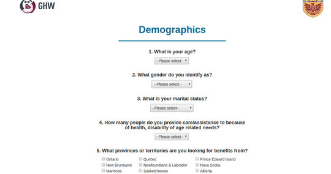
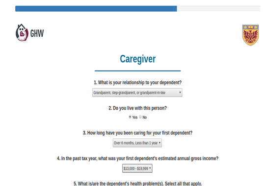
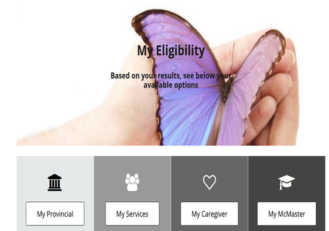
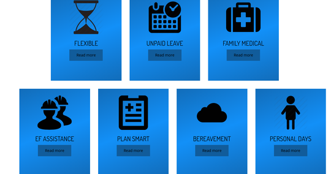

1) Reach out to us! For more information, contact our research assistant, Grace Martin (martingm@mcmaster.ca) who will be happy to help determine if your company can participate in this research
2) Meet with us at your workplace - Dr. Allison Williams is an expert in the field of caregiver-employees and holds the CIHR Research Chair in Gender, Work and Health. Invite her to come to your workplace to introduce the project and outline the beneficial impacts of caregiver-friendly policies!
3) Participate in the full study! The study would run, beginning in the Fall of 2016 and continue for 12 months.
In participating your company will gain...
1. An online decision-making tool, tailored specifically to your company's services, policies and accommodations for caregiver-employees




2. Three educational workshops offered to company supervisors / managers to increase knowledge of good practice in supporting caregiver-employees
3. Increased understanding of caregiver employees in your workplace through information collected across the study